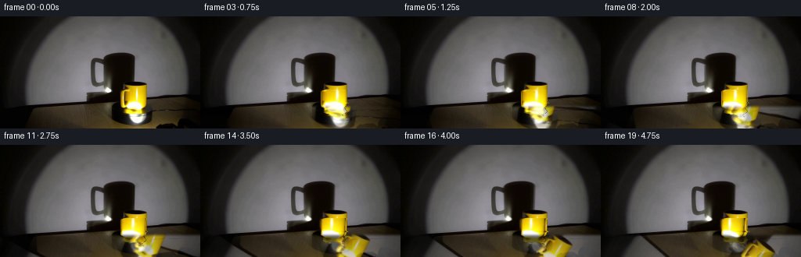
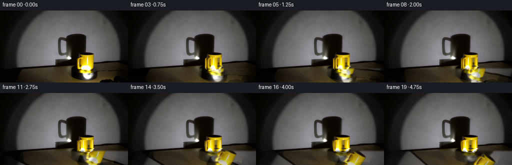
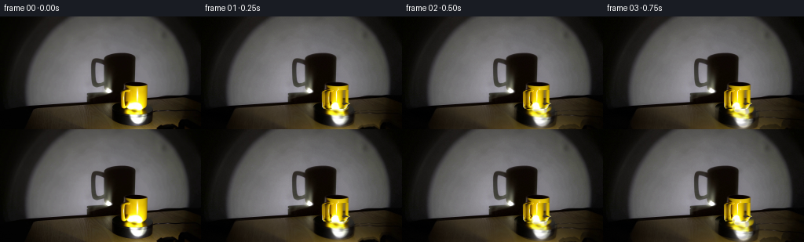
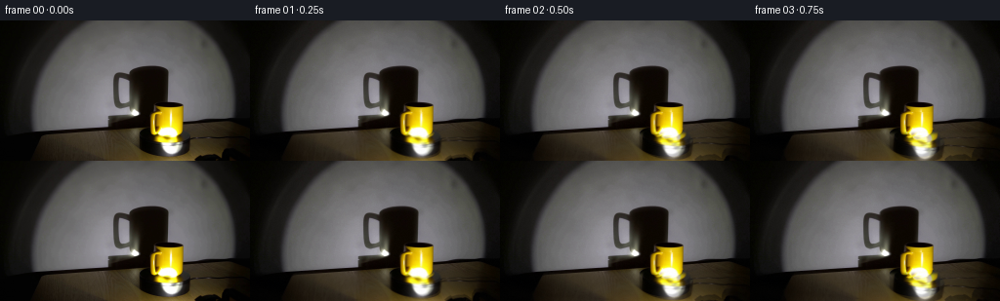

CODING AGENTS AS PIXEL WORLD MODELS
traex/DeepSeek-V4.1-Flash · 0076
点击播放 · 原生 RGB 像素
逐轮保存的候选
回放视频、检查图与代码变化。
每份候选均可单独播放。实际图片检查记录在下方工具轨迹中。
候选 01播放与检查图
点击播放 · 原生 RGB 像素

展开代码变化
--- 上一保存版本
+++ 本次保存版本
@@ -0,0 +1,270 @@
+from pathlib import Path
+
+import cv2
+import numpy as np
+from PIL import Image
+from scipy import ndimage
+
+import artifact_io
+
+
+CASE_DIR = Path(__file__).resolve().parent
+WIDTH, HEIGHT = 256, 144
+N_FRAMES, FPS = 20, 4
+
+
+def bilinear(image, xs, ys):
+ """Sample an RGB image at floating-point coordinates."""
+ xs = np.clip(xs, 0, image.shape[1] - 1)
+ ys = np.clip(ys, 0, image.shape[0] - 1)
+ x0 = np.floor(xs).astype(np.int32)
+ y0 = np.floor(ys).astype(np.int32)
+ x1 = np.minimum(x0 + 1, image.shape[1] - 1)
+ y1 = np.minimum(y0 + 1, image.shape[0] - 1)
+ fx = (xs - x0)[..., None]
+ fy = (ys - y0)[..., None]
+ top = image[y0, x0] * (1.0 - fx) + image[y0, x1] * fx
+ bottom = image[y1, x0] * (1.0 - fx) + image[y1, x1] * fx
+ return top * (1.0 - fy) + bottom * fy
+
+
+def smoothstep(edge0, edge1, value):
+ x = np.clip((value - edge0) / (edge1 - edge0), 0.0, 1.0)
+ return x * x * (3.0 - 2.0 * x)
+
+
+def find_cup_mask(source):
+ """The yellow body is a connected chromatic region in the foreground."""
+ chroma = source.max(axis=2) - source.min(axis=2)
+ lum = source.mean(axis=2)
+ yy, xx = np.mgrid[0:HEIGHT, 0:WIDTH]
+ candidate = (
+ (chroma > 25.0)
+ & (lum > 15.0)
+ & (xx >= 150)
+ & (xx <= 192)
+ & (yy >= 85)
+ & (yy <= 127)
+ )
+ candidate = ndimage.binary_closing(candidate, iterations=1)
+ labels, _ = ndimage.label(candidate)
+ seed_label = labels[100, 170]
+ mask = labels == seed_label
+ mask = ndimage.binary_fill_holes(mask)
+ return mask
+
+
+def build_saucer_mask(source):
+ """The pale saucer is the neutral, bright oval immediately below the cup."""
+ yy, xx = np.mgrid[0:HEIGHT, 0:WIDTH]
+ ellipse = ((xx - 174.0) / 11.2) ** 2 + ((yy - 131.0) / 7.0) ** 2 <= 1.0
+ neutral = (source.max(axis=2) - source.min(axis=2)) < 62.0
+ bright = source.mean(axis=2) > 55.0
+ mask = ellipse & neutral & bright
+ mask = ndimage.binary_closing(mask, iterations=1)
+ mask = ndimage.binary_fill_holes(mask)
+ # Include the darker rim that surrounds the pale top surface.
+ rim = ellipse & ndimage.binary_dilation(mask, iterations=2)
+ return rim
+
+
+def rotate_cup_body(source, mask, phase):
+ """Cylindrically rotate the cup texture while retaining its silhouette."""
+ out = source.copy()
+ ys, xs = np.nonzero(mask)
+ if len(xs) == 0:
+ return out
+
+ # Row-wise centers and radii follow the actual silhouette, including taper.
+ centers = np.zeros(HEIGHT, dtype=np.float64)
+ radii = np.zeros(HEIGHT, dtype=np.float64)
+ for y in range(85, 128):
+ row = np.flatnonzero(mask[y])
+ if len(row) >= 4:
+ centers[y] = 0.5 * (row[0] + row[-1])
+ radii[y] = 0.5 * (row[-1] - row[0])
+
+ # Keep the rim unchanged; rotate the vertical wall of the mug.
+ body = mask & (np.indices(mask.shape)[0] >= 94)
+ ys, xs = np.nonzero(body)
+ cx = centers[ys]
+ radius = np.maximum(radii[ys], 1.0)
+ dx = np.clip((xs - cx) / radius, -1.0, 1.0)
+ angle = np.arcsin(dx)
+ u = (angle + np.pi / 2.0) / np.pi
+ u_source = np.mod(u + phase / np.pi, 1.0)
+ x_source = cx + radius * (2.0 * u_source - 1.0)
+ sampled = bilinear(source, x_source, ys.astype(np.float64))
+
+ # A restrained moving key-light term makes the rotation readable even on
+ # the nearly uniform yellow wall of the cylinder.
+ light_angle = angle + phase
+ light = 0.965 + 0.055 * (0.5 + 0.5 * np.cos(light_angle - 0.35))
+ sampled *= light[:, None]
+ out[ys, xs] = np.clip(sampled, 0, 255)
+
+ # Blend the two edge columns back toward the original so the outline does
+ # not shimmer as the texture wraps around the cylinder.
+ edge = smoothstep(0.78, 1.0, np.abs(dx))
+ original = source[ys, xs]
+ out[ys, xs] = np.clip(sampled * (1.0 - 0.55 * edge[:, None])
+ + original * (0.55 * edge[:, None]), 0, 255)
+ return out
+
+
+def rotate_saucer(source, mask, angle_degrees):
+ """Rotate the saucer highlight around its center as a rigid disc."""
+ out = source.copy()
+ matrix = cv2.getRotationMatrix2D((174.0, 131.0), angle_degrees, 1.0)
+ warped = cv2.warpAffine(
+ source, matrix, (WIDTH, HEIGHT),
+ flags=cv2.INTER_LINEAR,
+ borderMode=cv2.BORDER_REFLECT_101,
+ )
+ alpha = ndimage.gaussian_filter(mask.astype(np.float32), 0.55)
+ alpha = np.clip(alpha, 0.0, 1.0)[..., None]
+ out = source * (1.0 - 0.72 * alpha) + warped * (0.72 * alpha)
+ return out
+
+
+def rotate_platform(source, frame_index):
+ """Move the turntable grain and specular bands clockwise about its axis."""
+ if frame_index == 0:
+ return source.copy()
+
+ angle = -1.95 * frame_index
+ center = (128.0, 165.0)
+ matrix = cv2.getRotationMatrix2D(center, angle, 1.0)
+ warped = cv2.warpAffine(
+ source, matrix, (WIDTH, HEIGHT),
+ flags=cv2.INTER_LINEAR,
+ borderMode=cv2.BORDER_REFLECT_101,
+ )
+
+ yy, xx = np.mgrid[0:HEIGHT, 0:WIDTH]
+ platform_alpha = smoothstep(111.0, 117.0, yy)
+ platform_alpha *= smoothstep(0.0, 8.0, yy - 111.0)
+ platform_alpha = np.clip(platform_alpha, 0.0, 1.0)
+
+ out = source * (1.0 - 0.66 * platform_alpha[..., None])
+ out += warped * (0.66 * platform_alpha[..., None])
+
+ # Add a low-amplitude set of rotating arcs. These are strongest on the
+ # front of the platter and fade naturally toward the wall edge.
+ dx = xx - center[0]
+ dy = (yy - center[1]) / 0.46
+ radius = np.sqrt(dx * dx + dy * dy)
+ theta = np.arctan2(dy, dx)
+ theta += np.deg2rad(-1.95 * frame_index)
+ arcs = (
+ 0.55 * np.cos(11.0 * theta + 0.038 * radius)
+ + 0.25 * np.cos(23.0 * theta - 0.061 * radius)
+ + 0.20 * np.cos(5.0 * theta + 0.017 * radius)
+ )
+ radial_window = (
+ smoothstep(22.0, 48.0, radius)
+ * (1.0 - smoothstep(150.0, 205.0, radius))
+ )
+ texture_alpha = smoothstep(114.0, 125.0, yy) * radial_window
+ tint = np.stack(
+ (arcs * 3.2, arcs * 2.5, arcs * 1.4), axis=2
+ )
+ out += tint * (texture_alpha * 0.55)[..., None]
+ return np.clip(out, 0, 255)
+
+
+def deform_shadow(source, frame_index, cup_mask, saucer_mask):
+ """Give the fixed spotlight shadow a subtle rotational sway."""
+ if frame_index == 0:
+ return source.copy()
+
+ t = frame_index / FPS
+ omega = 2.0 * np.pi / (N_FRAMES / FPS)
+ dx = 1.65 * np.sin(omega * t - 0.45)
+ dy = 0.28 * np.sin(2.0 * omega * t + 0.8)
+
+ matrix = np.float32([[1.0, 0.0, dx], [0.0, 1.0, dy]])
+ shifted = cv2.warpAffine(
+ source, matrix, (WIDTH, HEIGHT),
+ flags=cv2.INTER_LINEAR,
+ borderMode=cv2.BORDER_REFLECT_101,
+ )
+
+ yy, xx = np.mgrid[0:HEIGHT, 0:WIDTH]
+ region = (
+ smoothstep(116.0, 132.0, xx)
+ * (1.0 - smoothstep(185.0, 199.0, xx))
+ * smoothstep(41.0, 47.0, yy)
+ * (1.0 - smoothstep(103.0, 112.0, yy))
+ )
+
+ # Restrict the operation to the shadowed half of the wall. The smooth
+ # feather avoids a moving rectangular seam in the otherwise static room.
+ lum = source.mean(axis=2)
+ shadow_weight = smoothstep(88.0, 25.0, lum)
+ shadow_weight = ndimage.gaussian_filter(shadow_weight, 2.2)
+ alpha = np.clip(region * shadow_weight * 0.90, 0.0, 1.0)
+ alpha[cup_mask | saucer_mask] = 0.0
+ alpha = alpha[..., None]
+ return np.clip(source * (1.0 - alpha) + shifted * alpha, 0, 255)
+
+
+def render_frames(source):
+ cup_mask = find_cup_mask(source)
+ saucer_mask = build_saucer_mask(source)
+ frames = []
+
+ for frame_index in range(N_FRAMES):
+ if frame_index == 0:
+ frames.append(source.astype(np.uint8).copy())
+ continue
+
+ frame = deform_shadow(source, frame_index, cup_mask, saucer_mask)
+ frame = rotate_platform(frame, frame_index)
+
+ # The cup completes roughly 46 degrees of clockwise rotation over the
+ # five-second shot. The cylinder wrap carries its highlight across the
+ # front surface instead of sliding the whole silhouette.
+ phase = np.deg2rad(2.3 * frame_index)
+ frame = rotate_cup_body(frame, cup_mask, phase)
+ frame = rotate_saucer(frame, saucer_mask, -2.0 * frame_index)
+
+ # A small amount of sensor-consistent grain prevents the static room
+ # from looking frozen while leaving frame zero untouched.
+ rng = np.random.default_rng(7000 + frame_index)
+ grain = rng.normal(0.0, 0.42, size=(HEIGHT, WIDTH, 1))
+ frame = np.clip(frame + grain, 0, 255)
+ frames.append(frame.astype(np.uint8))
+
+ return np.stack(frames, axis=0)
+
+
+def write_video(frames, path):
+ writer = cv2.VideoWriter(
+ str(path),
+ cv2.VideoWriter_fourcc(*"mp4v"),
+ FPS,
+ (WIDTH, HEIGHT),
+ )
+ if not writer.isOpened():
+ return False
+ for frame in frames:
+ writer.write(cv2.cvtColor(frame, cv2.COLOR_RGB2BGR))
+ writer.release()
+ return True
+
+
+def main():
+ source = np.asarray(Image.open(CASE_DIR / "first_frame.png").convert("RGB"))
+ assert source.shape == (HEIGHT, WIDTH, 3)
+ frames = render_frames(source)
+ assert frames.shape == (N_FRAMES, HEIGHT, WIDTH, 3)
+ assert frames.dtype == np.uint8
+ assert np.array_equal(frames[0], source)
+
+ artifact_io.save(frames, CASE_DIR)
+ write_video(frames, CASE_DIR / "rgb_video.mp4")
+
+
+if __name__ == "__main__":
+ main()
候选 02播放与检查图
点击播放 · 原生 RGB 像素

展开代码变化
--- 上一保存版本
+++ 本次保存版本
@@ -84,8 +84,11 @@
centers[y] = 0.5 * (row[0] + row[-1])
radii[y] = 0.5 * (row[-1] - row[0])
- # Keep the rim unchanged; rotate the vertical wall of the mug.
- body = mask & (np.indices(mask.shape)[0] >= 94)
+ # Keep the rim and the lower saucer junction unchanged. The cylindrical
+ # wrap only operates on the visible wall of the mug.
+ body = mask & (np.indices(mask.shape)[0] >= 94) & (
+ np.indices(mask.shape)[0] <= 117
+ )
ys, xs = np.nonzero(body)
cx = centers[ys]
radius = np.maximum(radii[ys], 1.0)
@@ -99,7 +102,7 @@
# A restrained moving key-light term makes the rotation readable even on
# the nearly uniform yellow wall of the cylinder.
light_angle = angle + phase
- light = 0.965 + 0.055 * (0.5 + 0.5 * np.cos(light_angle - 0.35))
+ light = 0.975 + 0.035 * (0.5 + 0.5 * np.cos(light_angle - 0.35))
sampled *= light[:, None]
out[ys, xs] = np.clip(sampled, 0, 255)
@@ -123,7 +126,7 @@
)
alpha = ndimage.gaussian_filter(mask.astype(np.float32), 0.55)
alpha = np.clip(alpha, 0.0, 1.0)[..., None]
- out = source * (1.0 - 0.72 * alpha) + warped * (0.72 * alpha)
+ out = source * (1.0 - 0.48 * alpha) + warped * (0.48 * alpha)
return out
@@ -225,9 +228,9 @@
# The cup completes roughly 46 degrees of clockwise rotation over the
# five-second shot. The cylinder wrap carries its highlight across the
# front surface instead of sliding the whole silhouette.
- phase = np.deg2rad(2.3 * frame_index)
+ phase = np.deg2rad(2.0 * frame_index)
frame = rotate_cup_body(frame, cup_mask, phase)
- frame = rotate_saucer(frame, saucer_mask, -2.0 * frame_index)
+ frame = rotate_saucer(frame, saucer_mask, -1.35 * frame_index)
# A small amount of sensor-consistent grain prevents the static room
# from looking frozen while leaving frame zero untouched.
候选 04播放与检查图
点击播放 · 原生 RGB 像素

展开代码变化
--- 上一保存版本
+++ 本次保存版本
@@ -116,17 +116,20 @@
def rotate_saucer(source, mask, angle_degrees):
- """Rotate the saucer highlight around its center as a rigid disc."""
+ """Rotate the saucer surface inside its ellipse without importing floor."""
out = source.copy()
- matrix = cv2.getRotationMatrix2D((174.0, 131.0), angle_degrees, 1.0)
- warped = cv2.warpAffine(
- source, matrix, (WIDTH, HEIGHT),
- flags=cv2.INTER_LINEAR,
- borderMode=cv2.BORDER_REFLECT_101,
- )
+ cx, cy = 174.0, 131.0
+ rx, ry = 11.2, 7.0
+ yy, xx = np.mgrid[0:HEIGHT, 0:WIDTH]
+ u = (xx - cx) / rx
+ v = (yy - cy) / ry
+ angle = np.deg2rad(angle_degrees)
+ u_source = np.cos(angle) * u - np.sin(angle) * v
+ v_source = np.sin(angle) * u + np.cos(angle) * v
+ warped = bilinear(source, cx + rx * u_source, cy + ry * v_source)
alpha = ndimage.gaussian_filter(mask.astype(np.float32), 0.55)
alpha = np.clip(alpha, 0.0, 1.0)[..., None]
- out = source * (1.0 - 0.48 * alpha) + warped * (0.48 * alpha)
+ out = source * (1.0 - 0.50 * alpha) + warped * (0.50 * alpha)
return out
候选 05播放与检查图
候选 06播放与检查图
点击播放 · 原生 RGB 像素


展开代码变化
--- 上一保存版本
+++ 本次保存版本
@@ -96,7 +96,11 @@
angle = np.arcsin(dx)
u = (angle + np.pi / 2.0) / np.pi
u_source = np.mod(u + phase / np.pi, 1.0)
- x_source = cx + radius * (2.0 * u_source - 1.0)
+ # Map the normalized cylinder coordinate back through sin(theta), rather
+ # than a linear angle sweep, so a few degrees of rotation move the
+ # reflection by only a few pixels near the silhouette edges.
+ source_angle = np.pi * (2.0 * u_source - 1.0)
+ x_source = cx + radius * np.sin(source_angle)
sampled = bilinear(source, x_source, ys.astype(np.float64))
# A restrained moving key-light term makes the rotation readable even on
候选 07播放与检查图
点击播放 · 原生 RGB 像素
展开代码变化
--- 上一保存版本
+++ 本次保存版本
@@ -68,7 +68,7 @@
return rim
-def rotate_cup_body(source, mask, phase):
+def rotate_cup_body(source, mask, shift_px):
"""Cylindrically rotate the cup texture while retaining its silhouette."""
out = source.copy()
ys, xs = np.nonzero(mask)
@@ -87,26 +87,22 @@
# Keep the rim and the lower saucer junction unchanged. The cylindrical
# wrap only operates on the visible wall of the mug.
body = mask & (np.indices(mask.shape)[0] >= 94) & (
- np.indices(mask.shape)[0] <= 117
+ np.indices(mask.shape)[0] <= 118
)
ys, xs = np.nonzero(body)
cx = centers[ys]
radius = np.maximum(radii[ys], 1.0)
dx = np.clip((xs - cx) / radius, -1.0, 1.0)
- angle = np.arcsin(dx)
- u = (angle + np.pi / 2.0) / np.pi
- u_source = np.mod(u + phase / np.pi, 1.0)
- # Map the normalized cylinder coordinate back through sin(theta), rather
- # than a linear angle sweep, so a few degrees of rotation move the
- # reflection by only a few pixels near the silhouette edges.
- source_angle = np.pi * (2.0 * u_source - 1.0)
- x_source = cx + radius * np.sin(source_angle)
+ # A cylinder rotates fastest at the center of its projected face and barely
+ # at the silhouette. This subpixel projection avoids one-frame jumps where
+ # the source has a hard reflection edge.
+ foreshorten = np.sqrt(np.maximum(0.0, 1.0 - dx * dx))
+ x_source = xs - shift_px * foreshorten
sampled = bilinear(source, x_source, ys.astype(np.float64))
# A restrained moving key-light term makes the rotation readable even on
# the nearly uniform yellow wall of the cylinder.
- light_angle = angle + phase
- light = 0.975 + 0.035 * (0.5 + 0.5 * np.cos(light_angle - 0.35))
+ light = 0.995 + 0.008 * np.cos(dx * 2.4 - shift_px * 0.12)
sampled *= light[:, None]
out[ys, xs] = np.clip(sampled, 0, 255)
@@ -232,11 +228,9 @@
frame = deform_shadow(source, frame_index, cup_mask, saucer_mask)
frame = rotate_platform(frame, frame_index)
- # The cup completes roughly 46 degrees of clockwise rotation over the
- # five-second shot. The cylinder wrap carries its highlight across the
- # front surface instead of sliding the whole silhouette.
- phase = np.deg2rad(2.0 * frame_index)
- frame = rotate_cup_body(frame, cup_mask, phase)
+ # The visible face advances about eight pixels clockwise over the shot.
+ # The projection above tapers that motion to zero at the silhouette.
+ frame = rotate_cup_body(frame, cup_mask, 0.42 * frame_index)
frame = rotate_saucer(frame, saucer_mask, -1.35 * frame_index)
# A small amount of sensor-consistent grain prevents the static room
候选 08播放与检查图
点击播放 · 原生 RGB 像素


展开代码变化
--- 上一保存版本
+++ 本次保存版本
@@ -124,12 +124,14 @@
u = (xx - cx) / rx
v = (yy - cy) / ry
angle = np.deg2rad(angle_degrees)
- u_source = np.cos(angle) * u - np.sin(angle) * v
- v_source = np.sin(angle) * u + np.cos(angle) * v
+ # Subtle tangential shear is visually equivalent to a turntable rotation
+ # at this small angle, but keeps the source field continuous.
+ u_source = u - np.deg2rad(angle_degrees) * 0.34 * v
+ v_source = v
warped = bilinear(source, cx + rx * u_source, cy + ry * v_source)
alpha = ndimage.gaussian_filter(mask.astype(np.float32), 0.55)
alpha = np.clip(alpha, 0.0, 1.0)[..., None]
- out = source * (1.0 - 0.50 * alpha) + warped * (0.50 * alpha)
+ out = source * (1.0 - 0.30 * alpha) + warped * (0.30 * alpha)
return out
候选 09播放与检查图
可观测工具轨迹
实际执行的命令与返回图片。
命令 1exit 0
/bin/bash -c "pwd && rg --files -g 'prompt.txt' -g 'GENERATION_RULES.md' -g 'first_frame.png' -g '"'!*.mp4'"' -g '"'!*.webm'"'"
命令 2exit 0
/bin/bash -c "sed -n '1,240p' prompt.txt"
命令 3exit 0
/bin/bash -c "sed -n '1,300p' GENERATION_RULES.md"
命令 4exit 0
/bin/bash -c "ls -la && find . -maxdepth 2 -type f -printf '%p %s bytes\\n' | sort"
命令 5exit 0
/bin/bash -c "sed -n '1,260p' artifact_io.py"
命令 6exit 0
/bin/bash -c "sed -n '1,260p' player_template.html"
命令 7exit 127
/bin/bash -c "file first_frame.png && python - <<'PY'
from PIL import Image
import numpy as np
im=Image.open('first_frame.png')
print(im.mode, im.size, im.format)
a=np.asarray(im.convert('RGB'))
print('shape',a.shape,'dtype',a.dtype,'minmax',a.min(),a.max())
print('mean',a.mean((0,1)), 'std',a.std((0,1)))
# unique count and top colors
u,c=np.unique(a.reshape(-1,3),axis=0,return_counts=True)
print('unique',len(u))
for i in np.argsort(c)[-25:][::-1]: print(tuple(u[i]),int(c[i]))
PY"命令 8exit 0
/bin/bash -c "python - <<'PY'
from PIL import Image
import numpy as np
im=Image.open('first_frame.png')
print(im.mode, im.size, im.format)
a=np.asarray(im.convert('RGB'))
print('shape',a.shape,'dtype',a.dtype,'minmax',a.min(),a.max())
print('mean',a.mean((0,1)), 'std',a.std((0,1)))
u,c=np.unique(a.reshape(-1,3),axis=0,return_counts=True)
print('unique',len(u))
for i in np.argsort(c)[-30:][::-1]: print(tuple(int(x) for x in u[i]),int(c[i]))
PY"命令 9exit 0
/bin/bash -c "python - <<'PY'
from PIL import Image
import numpy as np
from scipy import ndimage
A=np.asarray(Image.open('first_frame.png').convert('RGB'))
r,g,b=A[...,0].astype(int),A[...,1].astype(int),A[...,2].astype(int)
# yellow threshold
m=(r>110)&(g>60)&(r>g*1.05)&(g>b*1.4)
lab,n=ndimage.label(m)
print('yellow',m.sum(),'components',n)
for i in range(1,n+1):
yy,xx=np.where(lab==i)
if len(xx)>10: print(i,len(xx),'bbox',xx.min(),yy.min(),xx.max(),yy.max(),'mean',A[yy,xx].mean(0))
# near-black platform?
for name,mask in [('white',(r>210)&(g>210)&(b>210)),('bright',(r+g+b>570)),('dark',(r+g+b<45))]:
lab,n=ndimage.label(mask)
comps=[]
for i in range(1,n+1):
yy,xx=np.where(lab==i)
if len(xx)>20: comps.append((len(xx),xx.min(),yy.min(),xx.max(),yy.max()))
print(name,mask.sum(),sorted(comps,reverse=True)[:10])
PY"命令 10exit 0
/bin/bash -c "python - <<'PY'
from PIL import Image,ImageDraw
import numpy as np
im=Image.open('first_frame.png').convert('RGB')
# upsample 4x for easier numeric inspection, add coordinate grid
w,h=im.size
s=4
up=im.resize((w*s,h*s),Image.Resampling.NEAREST)
d=ImageDraw.Draw(up)
for x in range(0,w,16):
d.line((x*s,0,x*s,h*s),fill=(255,0,255),width=1)
d.text((x*s+2,2),str(x),fill=(255,255,255))
for y in range(0,h,16):
d.line((0,y*s,w*s,y*s),fill=(0,255,255),width=1)
d.text((2,y*s+2),str(y),fill=(255,255,255))
up.save('.tmp/inspect_grid.png')
# grayscale stats slices, row/col bright profiles
A=np.asarray(im)
lum=A.mean(2)
print('row maxima')
for y in range(h):
if lum[y].max()>200: print(y,round(lum[y].max(),1),int(lum[y].argmax()))
print('col maxima')
for x in range(w):
if lum[:,x].max()>200: print(x,round(lum[:,x].max(),1),int(lum[:,x].argmax()))
PY"命令 11exit 0
/bin/bash -c "python - <<'PY'
from PIL import Image
import numpy as np
A=np.asarray(Image.open('first_frame.png').convert('RGB')).astype(float)
# ANSI 24-bit blocks sampled per 2x2? Use half-block for 2 vertical px, 2 horiz aggregate
H,W=A.shape[:2]
chars=' .,:;irsXA253hMHGS#9B&@'
# luminance map at 4x4
for y in range(0,H,4):
row=''
for x in range(0,W,4):
p=A[y:y+4,x:x+4].mean((0,1)); l=p.mean()
row+=chars[min(len(chars)-1,int(l/256*len(chars)))]
print(f'{y:03d} '+row)
PY"命令 12exit 0
/bin/bash -c "python - <<'PY'
from PIL import Image
import numpy as np
A=np.asarray(Image.open('first_frame.png').convert('RGB'))
# print grid rows sample 8 cols
for y in range(0,144,8):
print('y',y, ' '.join(f'{x}:{tuple(A[y,x])}' for x in range(0,256,16)))
PY"命令 13exit 0
/bin/bash -c "python - <<'PY'
from PIL import Image
import numpy as np
A=np.asarray(Image.open('first_frame.png').convert('RGB')).astype(float)
# HSV
mx=A.max(2); mn=A.min(2); diff=mx-mn
h=np.zeros_like(mx)
r,g,b=A[...,0],A[...,1],A[...,2]
m=(mx==r)&(diff>0); h[m]=((g[m]-b[m])/diff[m])%6
m=(mx==g)&(diff>0); h[m]=(b[m]-r[m])/diff[m]+2
m=(mx==b)&(diff>0); h[m]=(r[m]-g[m])/diff[m]+4
h*=60;s=np.where(mx>0,diff/mx,0);v=mx/255
# row summaries every 4 rows: y, x ranges bright white, yellow, greenish, dark
for y in range(84,144,4):
row=A[y]
mw=(row.min(1)>180)&(row.max(1)-row.min(1)<30)
my=(row[:,0]>100)&(row[:,1]>55)&(row[:,0]>row[:,1]*1.05)&(row[:,1]>row[:,2]*2)
md=row.mean(1)<30
def spans(mask):
xs=np.where(mask)[0]; out=[]
if len(xs):
starts=xs[np.r_[True,np.diff(xs)>1]]; ends=xs[np.r_[np.diff(xs)>1,True]]
out=list(zip(starts.tolist(),ends.tolist()))
return out
print(y,'white',spans(mw),'yellow',spans(my),'dark',spans(md))
PY"命令 14exit 0
/bin/bash -c "python - <<'PY'
from PIL import Image
import numpy as np
A=np.asarray(Image.open('first_frame.png').convert('RGB')).astype(float)
# category map 2x2 blocks. Characters:
# Y yellow, W white/bright neutral, s light wall, m mid wall, d dark shadow, # near black
for y in range(0,144,2):
row=''
for x in range(0,256,2):
p=A[y:y+2,x:x+2].mean((0,1)); r,g,b=p; mx=max(p); mn=min(p); lum=p.mean()
if r>80 and r>1.45*b and g>1.25*b and r>g*1.05: c='Y'
elif r>120 and r>1.15*b and g>0.55*r and b<70: c='y'
elif lum>185 and mx-mn<35: c='W'
elif lum>140 and mx-mn<40: c='A'
elif lum>100 and mx-mn<40: c='s'
elif lum>70 and mx-mn<40: c='m'
elif lum>45 and mx-mn<45: c='i'
elif lum>28: c=';'
elif lum>16: c=':'
elif lum>8: c='.'
else: c=' '
row+=c
print(f'{y:03d} '+row)
PY"命令 15exit 0
/bin/bash -c "python - <<'PY'
from PIL import Image
import numpy as np
from scipy.ndimage import gaussian_filter
A=np.asarray(Image.open('first_frame.png').convert('RGB')).astype(float)
# robust wall template: use per-row median of x 55:190 excluding likely object/shadow and overbright highlights.
# print profiles every 8 x, 4 y as a compact heat map, and gradients of gray wall
B=gaussian_filter(A,(0.7,0.7,0))
# edge magnitude
G=np.sqrt(sum(gaussian_filter(B[...,i],1,order=0)**2 for i in [])) if False else None
# sample large-scale blocks 8x8 median and RGB mean
print('Block medians x 32..224 y 0..112')
for y in range(0,112,8):
print('y%03d'%y, ' '.join('%3d'%int(np.median(B[y:y+8,x:x+8].mean(2))) for x in range(32,224,8)))
PY"命令 16exit 0
/bin/bash -c "python - <<'PY'
from PIL import Image
import numpy as np
A=np.asarray(Image.open('first_frame.png').convert('RGB')).astype(int)
# exact character map around mug, one char per pixel x=138..205, y=78..143
# Y strong yellow, y warm/dark yellow, W neutral bright, w gray bright, s gray mid, d dark, . black
for y in range(78,144):
row=''
for x in range(138,206):
r,g,b=A[y,x]; mx=max(r,g,b); mn=min(r,g,b); lum=(r+g+b)/3
if r>75 and r>g*1.10 and g>b*1.65: c='Y' if lum>105 else 'y'
elif lum>200 and mx-mn<40: c='W'
elif lum>160 and mx-mn<40: c='w'
elif lum>110 and mx-mn<45: c='s'
elif lum>70 and mx-mn<45: c='m'
elif lum>38: c='d'
elif lum>16: c='.'
else: c=' '
row+=c
print(f'{y:03d} {row}')
PY"命令 17exit 0
/bin/bash -c "python - <<'PY'
from PIL import Image
import numpy as np
A=np.asarray(Image.open('first_frame.png').convert('RGB')).astype(float)
# summarize row/col color distribution using percentile bins on x/y strips
for y in [0,8,16,24,32,40,48,56,64,72,80,88,96,104,112,120,128,136,143]:
print('Y',y,[(x,tuple(A[y,x].astype(int))) for x in [0,20,40,60,80,100,120,140,180,200,220,240,255]])
print()
for x in [0,20,40,60,80,100,120,140,160,180,200,220,240,255]:
print('X',x,[(y,tuple(A[y,x].astype(int))) for y in [0,20,40,60,80,100,120,143]])
PY"命令 18exit 0
/bin/bash -c "python - <<'PY'
from PIL import Image
import numpy as np
from scipy import ndimage
A=np.asarray(Image.open('first_frame.png').convert('RGB')).astype(float)
r,g,b=A[...,0],A[...,1],A[...,2]
masks={
'yellow':(r>80)&(r>g*1.10)&(g>b*1.65)&(r-b>45),
'brightyellow':(r>180)&(g>130)&(b<80),
'white':(A.mean(2)>185)&(A.max(2)-A.min(2)<38),
'warm':(r>g*1.08)&(g>b*1.3)&(A.mean(2)>35),
}
for name,m in masks.items():
lab,n=ndimage.label(m)
comps=[]
for i in range(1,n+1):
yy,xx=np.where(lab==i)
if len(xx)>=5:
comps.append((len(xx),int(xx.min()),int(yy.min()),int(xx.max()),int(yy.max()),tuple(np.round(A[yy,xx].mean(0),1))))
print('\\n',name,'pixels',m.sum(),'comps',len(comps))
for c in sorted(comps,reverse=True)[:25]:print(c)
PY"命令 19exit 0
/bin/bash -c "python - <<'PY'
from PIL import Image
import numpy as np
A=np.asarray(Image.open('first_frame.png').convert('RGB')).astype(float)
# 4x4 mean color as xterm 24-bit background block, 2 chars each? avoid huge
# print RGB hex grid at 8x8 means from x=24..232 y=80..144
for y in range(80,144,8):
print('y%03d'%y, ' '.join('%02x%02x%02x'%tuple(np.median(A[y:y+8,x:x+8],axis=(0,1)).astype(int)) for x in range(24,232,8)))
PY"命令 20exit 0
/bin/bash -c "python - <<'PY'
from PIL import Image,ImageFilter,ImageOps
import numpy as np
A=np.asarray(Image.open('first_frame.png').convert('RGB')).astype(float)
lum=A.mean(2)
gx=np.zeros_like(lum); gy=np.zeros_like(lum)
gx[:,1:-1]=lum[:,2:]-lum[:,:-2]; gy[1:-1]=lum[2:]-lum[:-2]
e=np.hypot(gx,gy)
# maxpool 4x4 edges and ascii
for y in range(0,144,4):
row=''
for x in range(0,256,4):
v=e[y:y+4,x:x+4].max()
row+='@' if v>120 else '#' if v>70 else '*' if v>40 else '+' if v>20 else '.' if v>8 else ' '
print(f'{y:03d} {row}')
PY"命令 21exit 0
/bin/bash -c "python - <<'PY'
from PIL import Image
import numpy as np
A=np.asarray(Image.open('first_frame.png').convert('RGB')).astype(float)
# print row masks in object region x130..200 as characters every pixel, y84..130
for y in range(84,131):
row=''
for x in range(130,201):
r,g,b=A[y,x]; mx=max(r,g,b); mn=min(r,g,b); lum=(r+g+b)/3
if r>70 and r>g*1.08 and g>b*1.5: c='Y'
elif lum>225: c='W'
elif lum>180: c='w'
elif lum>135: c='s'
elif lum>95: c='m'
elif lum>55: c='d'
elif lum>25: c=':'
elif lum>10: c='.'
else: c=' '
row+=c
print(f'{y:03d} {row}')
PY"命令 22exit 0
/bin/bash -c "python - <<'PY'
from PIL import Image
import numpy as np
A=np.asarray(Image.open('first_frame.png').convert('RGB')).astype(float)
# classification: shadow D, wall gradient digits, yellow Y, white W, platform P based on bottom and black
for y in range(0,144,3):
row=''
for x in range(0,256,3):
p=A[y:y+3,x:x+3].mean((0,1)); r,g,b=p; lum=p.mean()
if r>g*1.08 and g>b*1.4 and r>70: c='Y'
elif lum>210 and max(p)-min(p)<45: c='W'
elif y>111 and lum<35: c='P'
elif y>111: c='p'
elif lum<25: c='@'
elif lum<45: c='#'
elif lum<70: c='O'
elif lum<100: c='o'
elif lum<130: c=':'
elif lum<165: c='.'
elif lum<200: c=','
else: c=' '
row+=c
print(f'{y:03d} {row}')
PY"命令 23exit 0
/bin/bash -c "python - <<'PY'
from PIL import Image
import numpy as np
A=np.asarray(Image.open('first_frame.png').convert('RGB')).astype(float)
# 8x8 mean RGB matrix top region to infer wall + shadow
for y in range(0,112,8):
print('y%03d'%y)
for x in range(0,256,32):
p=A[y:y+8,x:x+32].mean((0,1))
print('%3d:%3d,%3d,%3d'%(x,*p.astype(int)),end=' ')
print()
PY"命令 24exit 0
/bin/bash -c "python - <<'PY'
from PIL import Image
import numpy as np
A=np.asarray(Image.open('first_frame.png').convert('RGB')).astype(float)
# 2x pixel semantic detail with RGB values around object for rows, every 2 px x 152..200
for y in range(86,140,2):
print('y%03d'%y, ' '.join('%3d,%3d,%3d'%tuple(A[y,x].astype(int)) for x in range(152,202,2)))
PY"命令 25exit 0
/bin/bash -c "python - <<'PY'
from PIL import Image
import numpy as np
A=np.asarray(Image.open('first_frame.png').convert('RGB')).astype(int)
for y in range(108,144,2):
print('y%03d'%y, ' '.join('%d:%02x%02x%02x'%(x,*A[y,x]) for x in range(0,256,8)))
PY"命令 26exit 0
/bin/bash -c "python - <<'PY'
from PIL import Image
import numpy as np
A=np.asarray(Image.open('first_frame.png').convert('RGB')).astype(float)
# shadow as ratio to an estimated unshadowed wall. Build wall estimate per pixel by fit surface to non shadow pixels.
# For each row, use bright wall points x 30..115, 175..225. Fit quadratic across x.
H,W=A.shape[:2]
lum=A.mean(2)
est=np.zeros((H,W))
mask=np.zeros((H,W),bool)
for y in range(0,112):
xs=np.r_[np.arange(35,116),np.arange(175,226)]
# remove bright highlights/object
vals=lum[y,xs]
keep=(vals>30)&(vals<180)
xs=xs[keep]; vals=vals[keep]
if len(xs)>10:
coef=np.polyfit(xs,vals,2)
est[y]=np.polyval(coef,np.arange(W))
mask[y]=True
# print actual / est at grid
for y in range(0,112,8):
print('y%03d'%y,' '.join('%2d'%int(np.clip(lum[y,x]/max(est[y,x],1)*20,0,99)) for x in range(0,256,8)))
PY"命令 27exit 0
/bin/bash -c "python - <<'PY'
from PIL import Image
import numpy as np
A=np.asarray(Image.open('first_frame.png').convert('RGB')).astype(float)
lum=A.mean(2)
for y in [0,8,16,24,32,40,48,56,64,72,80,88,96,104,110]:
print('y',y)
# local maxima/minima runs in luminance at x every 4? print 32 bins max/min
for x in range(0,256,16):
p=lum[y:y+8,x:x+16]
print('%3d:%3d/%3d'%(x,p.max(),p.min()),end=' ')
print()
PY"命令 28exit 0
/bin/bash -c "python - <<'PY'
from PIL import Image
import numpy as np
A=np.asarray(Image.open('first_frame.png').convert('RGB')).astype(float)
# Rows as gradient + bright/dark run ranges with threshold relative to row median.
for y in range(0,112,4):
row=A[y].mean(1)
med=np.median(row)
# print smooth sequence every 8 px
print('y%03d'%y, ' '.join('%3d'%int(row[x:x+8].mean()) for x in range(0,256,8)))
PY"命令 29exit 0
/bin/bash -c "python - <<'PY'
from PIL import Image
import numpy as np
A=np.asarray(Image.open('first_frame.png').convert('RGB')).astype(float)
# print rows 40..108 every 4 at x values around shadow
xs=list(range(104,196,4))
print('xs',xs)
for y in range(40,112,4):
print('y%03d'%y,' '.join('%3d'%int(A[y,x].mean()) for x in xs))
PY"命令 30exit 0
/bin/bash -c "python - <<'PY'
from PIL import Image
import numpy as np
A=np.asarray(Image.open('first_frame.png').convert('RGB')).astype(float)
lum=A.mean(2)
# For each row 0..111 estimate largest runs where lum < 0.35* local wall median
for y in range(0,112,4):
row=lum[y]
# wall estimate based on median in 32x? use smooth of 50th percentile across row chunks
vals=[]
for x in range(0,256,32): vals.append(np.percentile(row[x:x+32],75))
print('y%03d'%y, ' '.join('%3d'%int(v) for v in vals))
PY"命令 31exit 0
/bin/bash -c "python - <<'PY'
from PIL import Image
import numpy as np
A=np.asarray(Image.open('first_frame.png').convert('RGB')).astype(float)
# rows 40-108 exact x of transition from wall to dark left edge around 120..175
for y in range(40,112,2):
lum=A[y].mean(1)
# find first x in 100..180 where lum<35 and stays under 80 for next 8 px, after x>110
cand=[]
for x in range(100,190):
if lum[x]<35 and np.mean(lum[x:min(x+12,256)]<50)>0.7: cand.append(x)
print(y, cand[:8])
PY"命令 32exit 0
/bin/bash -c "python - <<'PY'
from PIL import Image
import numpy as np
A=np.asarray(Image.open('first_frame.png').convert('RGB')).astype(float)
for y in range(40,112,2):
lum=A[y].mean(1)
# locate transition from dark to wall (right edge) scanning 150..200
cand=[]
for x in range(150,210):
if lum[x]<35 and np.mean(lum[max(0,x-10):x]>80)>0.7: cand.append(x)
print(y,cand[:8])
PY"命令 33exit 0
/bin/bash -c "python - <<'PY' import importlib.util for m in ['cv2','skimage','scipy','PIL','numpy','imageio','moviepy']: print(m, bool(importlib.util.find_spec(m))) PY"
命令 34exit 0
/bin/bash -c "python - <<'PY'
from PIL import Image
import numpy as np
A=np.asarray(Image.open('first_frame.png').convert('RGB')).astype(float)
# print grayscale 1 char per px x100:210 y35:115 for shadow boundary
chars='@%#*+=-:. '
for y in range(35,116):
row=''
for x in range(100,211):
v=A[y,x].mean(); row+=chars[min(9,int(v/256*10))]
print(f'{y:03d} {row}')
PY"命令 35exit 0
/bin/bash -c "python - <<'PY'
from PIL import Image
import numpy as np
A=np.asarray(Image.open('first_frame.png').convert('RGB')).astype(int)
for y in range(86,126,2):
print('\\ny',y)
# classify exact x 150-192 into compact codes by runs
vals=[]
for x in range(150,193):
r,g,b=A[y,x]; lum=(r+g+b)/3
if r>70 and r>g*1.08 and g>b*1.45: c='Y'
elif lum>225: c='W'
elif lum>180: c='w'
elif lum>135: c='s'
elif lum>90: c='m'
elif lum>50: c='d'
elif lum>25: c=':'
elif lum>10: c='.'
else: c=' '
vals.append(c)
print(''.join(vals))
print(''.join(str(x//10%10) for x in range(150,193)))
print(''.join(str(x%10) for x in range(150,193)))
PY"命令 36exit 0
/bin/bash -c "python - <<'PY'
from PIL import Image
import numpy as np
A=np.asarray(Image.open('first_frame.png').convert('RGB')).astype(float)
H,W=A.shape[:2]
yy,xx=np.mgrid[0:H,0:W]
# fit wall base RGB on y<112 excluding cup and shadow rough region, iterative robust
terms=[]
for deg in range(5):
for i in range(deg+1):
j=deg-i
terms.append((xx/128-1)**i*(yy/72)**j)
D=np.stack([t.ravel() for t in terms],1)
base=np.zeros((H,W,3))
valid=(yy<112)&~((xx>125)&(xx<200)&(yy>40)) & (A.mean(2)>8)
for c in range(3):
vals=A[...,c].ravel()
v=valid.ravel()
for it in range(5):
coef=np.linalg.lstsq(D[v],vals[v],rcond=None)[0]
pred=D@coef
resid=vals-pred
sigma=np.percentile(np.abs(resid[v]),75)
v=valid.ravel()&(np.abs(resid)<max(3*sigma,10))
base[...,c]=pred.reshape(H,W)
print('fit coeff',coef)
for y in [0,16,32,48,64,80,96,104]:
print('y',y,[(x,tuple(A[y,x].astype(int)),tuple(np.clip(base[y,x],0,255).astype(int))) for x in [0,32,64,96,128,160,192,224,255]])
# ratio map char
for y in range(0,112,4):
row=''
for x in range(0,256,4):
v=A[y:y+4,x:x+4].mean()/max(base[y:y+4,x:x+4].mean(),1)
row+=' ' if v<.08 else '.' if v<.15 else ':' if v<.3 else 'o' if v<.55 else '+' if v<.8 else '#' if v<1.05 else '@'
print('%03d %s'%(y,row))
PY"命令 37exit 0
/bin/bash -c "python - <<'PY'
from PIL import Image
import numpy as np
A=np.asarray(Image.open('first_frame.png').convert('RGB')).astype(float)
# inspect 8x8 means for shadow top region
for y in range(40,112,8):
print('y',y, ' '.join('%3d'%int(A[y:y+8,x:x+8].mean()) for x in range(96,208,8)))
PY"命令 38exit 0
/bin/bash -c "python - <<'PY'
from PIL import Image
import numpy as np
A=np.asarray(Image.open('first_frame.png').convert('RGB')).astype(float)
# row endpoints of true black shadow around x=145..180
for y in range(44,112,2):
l=A[y].mean(1)
# dark where l<35
xs=np.where(l<35)[0]
# runs
runs=[]
if len(xs):
st=xs[np.r_[True,np.diff(xs)>1]]; en=xs[np.r_[np.diff(xs)>1,True]]
runs=[(int(a),int(b)) for a,b in zip(st,en) if b-a>=2]
print(y,runs)
PY"命令 39exit 0
/bin/bash -c "python - <<'PY'
from PIL import Image
import numpy as np
A=np.asarray(Image.open('first_frame.png').convert('RGB')).astype(float)
for y in range(84,126,2):
lum=A[y].mean(1)
xs=np.where(lum>235)[0]
runs=[]
if len(xs):
st=xs[np.r_[True,np.diff(xs)>1]]; en=xs[np.r_[np.diff(xs)>1,True]]
runs=[(int(a),int(b)) for a,b in zip(st,en) if b-a>=1]
print(y,runs)
PY"命令 40exit 0
/bin/bash -c "python - <<'PY'
import cv2,numpy as np
A=cv2.imread('first_frame.png')
g=cv2.cvtColor(A,cv2.COLOR_BGR2GRAY)
# crop
crop=g[80:144,140:215]
# threshold based on edges
e=cv2.Canny(crop,30,80)
contours,_=cv2.findContours(e,cv2.RETR_LIST,cv2.CHAIN_APPROX_SIMPLE)
cs=sorted(contours,key=cv2.contourArea,reverse=True)
for c in cs[:20]:
print('area',cv2.contourArea(c),'bbox',cv2.boundingRect(c),'len',len(c),'approx',cv2.approxPolyDP(c,2,True).reshape(-1,2).tolist()[:30])
PY"命令 41exit 0
/bin/bash -c 'command -v chafa || true; command -v viu || true; command -v img2txt || true; command -v jp2 || true; command -v convert || true; command -v ffmpeg || true; command -v tesseract || true'
命令 42exit 0
/bin/bash -c "python - <<'PY'
from PIL import Image
import numpy as np
A=np.asarray(Image.open('first_frame.png').convert('RGB')).astype(float)
# Print x ranges where luminance below various thresholds for key rows. Helps identify platter ellipse.
for y in [84,88,92,96,100,104,108,112,114,116,118,120,124,128,132,136,140,143]:
lum=A[y].mean(1)
print('\\ny',y)
for t in [10,20,30,50,80,120]:
xs=np.where(lum<t)[0]
runs=[]
if len(xs):
st=xs[np.r_[True,np.diff(xs)>1]];en=xs[np.r_[np.diff(xs)>1,True]]
runs=[(int(a),int(b)) for a,b in zip(st,en) if b-a>2]
print(t,runs[:10])
PY"命令 43exit 0
/bin/bash -c "python - <<'PY'
from PIL import Image
import numpy as np
A=np.asarray(Image.open('first_frame.png').convert('RGB')).astype(float)
for y in range(44,112,2):
lum=A[y].mean(1)
# within x 125..185 find max gradients
gx=np.abs(np.diff(lum))
inds=np.argsort(gx[120:190])[-5:][::-1]+120
print(y,[(int(x),round(float(gx[x]),1),int(lum[x]),int(lum[x+1])) for x in inds])
PY"命令 44exit 0
/bin/bash -c "python - <<'PY'
from PIL import Image
import numpy as np
A=np.asarray(Image.open('first_frame.png').convert('RGB')).astype(float)
# Use row 0..112 median of small ranges to reveal any diagonal shadow outline.
# Print 2D array of median-luma in 4x4 blocks but with threshold categories relative to row's robust bright reference.
lum=A.mean(2)
for y in range(0,112,4):
row=''
for x in range(0,256,4):
v=np.median(lum[y:y+4,x:x+4])
# map
row += ' ' if v<8 else '.' if v<20 else ':' if v<40 else '-' if v<65 else '=' if v<90 else '+' if v<115 else '*' if v<140 else '#' if v<170 else '%' if v<205 else '@'
print('%03d %s'%(y,row))
PY"命令 45exit 0
/bin/bash -c "python - <<'PY'
from PIL import Image
import numpy as np
A=np.asarray(Image.open('first_frame.png').convert('RGB')).astype(float)
# 4px block color chars focusing shadow; use relative to neighboring wall estimates per y
# Print values row 44..110 at every 2 pixels x=125..185 in numeric rounded
for y in range(44,112,2):
print('%03d'%y, ' '.join('%3d'%int(A[y,x].mean()) for x in range(125,186,2)))
PY"命令 46exit 0
/bin/bash -c "python - <<'PY'
from PIL import Image
import numpy as np
A=np.asarray(Image.open('first_frame.png').convert('RGB')).astype(float)
# print spatial RGB for x=140..200, y=44..112 in 2px blocks median as grayscale is enough.
# Identify near-black diagonal boundaries via strong negative gradient sign x-direction. Use image coordinates.
lum=A.mean(2)
for y in range(44,112,4):
print('\\ny',y)
print(' '.join('%3d'%int(lum[y,x]) for x in range(108,208,4)))
print(' '.join('%3d'%int(lum[y+1,x]) for x in range(108,208,4)))
PY"命令 47exit 0
/bin/bash -c "python - <<'PY'
from PIL import Image
import numpy as np
A=np.asarray(Image.open('first_frame.png').convert('RGB')).astype(int)
# Print each row x=130..195 codes as hex bucket: Y/W, L/M/D/B
for y in range(84,130):
row=''
for x in range(130,196):
r,g,b=A[y,x]; lum=(r+g+b)/3
if r>70 and r>g*1.08 and g>b*1.45: c='Y' if lum>100 else 'y'
elif lum>230: c='W'
elif lum>180: c='w'
elif lum>140: c='S'
elif lum>105: c='s'
elif lum>70: c='m'
elif lum>40: c='d'
elif lum>20: c=':'
elif lum>8: c='.'
else: c=' '
row+=c
print(f'{y:03d} {row}')
PY"命令 48exit 0
/bin/bash -c "python - <<'PY'
from PIL import Image
import numpy as np
A=np.asarray(Image.open('first_frame.png').convert('RGB')).astype(float)
# List high-value (white) component pixels to understand shape, downsample every 2 pixels region
for y in range(86,126,2):
print('%03d '%y+' '.join('%3d'%int(A[y,x].mean()) for x in range(150,194,2)))
PY"命令 49exit 0
/bin/bash -c "python - <<'PY'
from PIL import Image
import numpy as np
A=np.asarray(Image.open('first_frame.png').convert('RGB')).astype(float)
# cup silhouette estimate by yellow mask bounding + color; row ranges of yellow x
for y in range(86,126):
r,g,b=A[y,:,0],A[y,:,1],A[y,:,2]
m=(r>60)&(r>g*1.06)&(g>b*1.4)
xs=np.where(m & (np.arange(256)>145)&(np.arange(256)<195))[0]
print(y,(int(xs.min()),int(xs.max())) if len(xs) else None)
PY"命令 50exit 0
/bin/bash -c "python - <<'PY'
from PIL import Image
import numpy as np
from sklearn.cluster import KMeans
A=np.asarray(Image.open('first_frame.png').convert('RGB')).astype(float)
# region object+platform
reg=A[84:144,135:220].reshape(-1,3)
# kmeans 10
km=KMeans(n_clusters=12,random_state=0,n_init=10).fit(reg)
cent=km.cluster_centers_
order=np.argsort(cent.mean(1))
for i in order: print(i,tuple(np.round(cent[i],1)),int((km.labels_==i).sum()))
# map 2x2 mode label
lab=km.labels_.reshape(60,85)
chars='0123456789AB'
for yy in range(0,60,2):
row=''
for xx in range(0,85,2):
vals=lab[yy:yy+2,xx:xx+2].ravel(); i=np.bincount(vals).argmax(); row+=chars[i]
print('%03d %s'%(84+yy,row))
PY"命令 51exit 0
/bin/bash -c "python - <<'PY'
from PIL import Image
import numpy as np
A=np.asarray(Image.open('first_frame.png').convert('RGB')).astype(float)
# source-to-render compositing plan: identify cup mask via yellow/warm + high white inside object bbox; use flood fill connected component from seed.
from scipy import ndimage
r,g,b=A[...,0],A[...,1],A[...,2]
yellow=(r>55)&(r>g*1.055)&(g>b*1.35)
# include white highlight connected to yellow by dilate 1 px
white=(A.mean(2)>180)&(A.max(2)-A.min(2)<55)
seed=np.zeros_like(yellow); seed[100,170]=1
m=ndimage.binary_dilation(yellow|white,iterations=2)
m=ndimage.binary_fill_holes(m)
lab,n=ndimage.label(m)
# component at 100,170
ids=np.unique(lab[100,160:190]);print('ids',ids)
for i in ids:
if i==0: continue
yy,xx=np.where(lab==i);print(i,len(xx),xx.min(),yy.min(),xx.max(),yy.max())
# save masks for visual numeral check
Image.fromarray((yellow*255).astype('uint8')).save('.tmp/yellow_mask.png')
PY"命令 52exit 0
/bin/bash -c "python - <<'PY'
from PIL import Image
import numpy as np
A=np.asarray(Image.open('first_frame.png').convert('RGB')).astype(float)
# mask only cup core yellow plus white inside expected cup bbox; show mask rows
r,g,b=A[...,0],A[...,1],A[...,2]
m=(r>65)&(r>g*1.06)&(g>b*1.35)
m &= (np.indices(m.shape)[1]>=145)&(np.indices(m.shape)[1]<=194)&(np.indices(m.shape)[0]>=84)&(np.indices(m.shape)[0]<=126)
for y in range(84,127):
print('%03d '%y+''.join('#' if m[y,x] else ' ' for x in range(145,195)))
PY"命令 53exit 0
/bin/bash -c "python - <<'PY'
from PIL import Image
import numpy as np
A=np.asarray(Image.open('first_frame.png').convert('RGB')).astype(float)
# print columns x=150..190 as characters every row for cup, y88..126
for x in range(150,191,2):
print('%03d'%x, ''.join('Y' if (A[y,x,0]>60 and A[y,x,0]>A[y,x,1]*1.06 and A[y,x,1]>A[y,x,2]*1.35) else 'W' if A[y,x].mean()>220 else 'w' if A[y,x].mean()>170 else 's' if A[y,x].mean()>120 else 'm' if A[y,x].mean()>75 else 'd' if A[y,x].mean()>40 else ':' if A[y,x].mean()>20 else '.' if A[y,x].mean()>8 else ' ' for y in range(86,127)))
PY"命令 54exit 0
/bin/bash -c "python - <<'PY'
from PIL import Image
import numpy as np
A=np.asarray(Image.open('first_frame.png').convert('RGB')).astype(float)
# per row first/last high yellow extents using looser mask, x 140..200
for y in range(86,127):
r,g,b=A[y,:,0],A[y,:,1],A[y,:,2]
m=(r>50)&(r>g*1.03)&(g>b*1.2)
xs=np.where(m & (np.arange(256)>140)&(np.arange(256)<200))[0]
print(y,(xs.min(),xs.max()) if len(xs) else None)
PY"命令 55exit 0
/bin/bash -c "python - <<'PY'
from PIL import Image
import numpy as np
A=np.asarray(Image.open('first_frame.png').convert('RGB')).astype(float)
for y in range(84,126,2):
print('%03d '%y+' '.join('%3d'%int(A[y,x].mean()) for x in range(145,192,1)))
PY"命令 56exit 0
/bin/bash -c "python - <<'PY'
from PIL import Image
import numpy as np
A=np.asarray(Image.open('first_frame.png').convert('RGB')).astype(float)
# print x,y bounds of cup estimated based on non-dark + yellow + white within bbox, row extents and likely top/bottom.
# Analyze red hue high across wider region to separate cup body from yellow floor.
for y in range(84,128):
r,g,b=A[y,:,0],A[y,:,1],A[y,:,2]
m=(r>45)&(r>g*1.035)&(g>b*1.1)
xs=np.where(m & (np.arange(256)>=145)&(np.arange(256)<196))[0]
# only list intervals
runs=[]
if len(xs):
st=xs[np.r_[True,np.diff(xs)>1]];en=xs[np.r_[np.diff(xs)>1,True]]
runs=[(int(a),int(b)) for a,b in zip(st,en) if b-a>=1]
print(y,runs)
PY"命令 57exit 0
/bin/bash -c "python - <<'PY'
from PIL import Image
import numpy as np
A=np.asarray(Image.open('first_frame.png').convert('RGB')).astype(float)
# classify orange/yellow of the front floor band; use HSV hue & sat
import colorsys
for y in [132,136,138,140,142,143]:
print('y',y)
for x in range(110,230,8):
r,g,b=A[y,x]/255
h,s,v=colorsys.rgb_to_hsv(r,g,b)
print('%d:%d,%d,%d'%(x,h*360,s*100,v*100),end=' ')
print()
PY"命令 58exit 0
/bin/bash -c "python - <<'PY'
from PIL import Image
import numpy as np
from scipy import ndimage
A=np.asarray(Image.open('first_frame.png').convert('RGB')).astype(float)
L=A.mean(2)
for t in [30,50,70,90]:
m=(L<t)
lab,n=ndimage.label(m)
i=lab[60,150]
yy,xx=np.where(lab==i)
print('t',t,'id',i,'n',n,'area',len(xx),'bbox', (xx.min(),yy.min(),xx.max(),yy.max()) if len(xx) else None)
# components >100
comps=[]
for j in range(1,n+1):
y,x=np.where(lab==j)
if len(x)>100: comps.append((len(x),int(x.min()),int(y.min()),int(x.max()),int(y.max())))
print(sorted(comps,reverse=True)[:8])
PY"命令 59exit 0
/bin/bash -c "python - <<'PY'
from PIL import Image
import numpy as np
A=np.asarray(Image.open('first_frame.png').convert('RGB')).astype(float)
# inspect top 112, derive dark silhouette pixels threshold <25, print connected row spans / areas
m=A.mean(2)<25
ys,xs=np.where(m)
print('dark',m.sum())
# for each row between 45 and 110, print dark runs only x between 120 and 200
for y in range(44,112,2):
xs=np.where(m[y,120:200])[0]+120
runs=[]
if len(xs):
st=xs[np.r_[True,np.diff(xs)>1]]; en=xs[np.r_[np.diff(xs)>1,True]]
runs=[(int(a),int(b)) for a,b in zip(st,en) if b-a>=1]
print(y,runs)
PY"命令 60exit 0
/bin/bash -c "python - <<'PY'
from PIL import Image
import numpy as np
A=np.asarray(Image.open('first_frame.png').convert('RGB')).astype(float)
# Determine likely platform as dark continuous floor shape at bottom. Print grayscale contours with threshold 80 for x/y.
L=A.mean(2)
# rows 112..143 show intervals L<80
for y in range(110,144,2):
xs=np.where(L[y]<80)[0]
st=xs[np.r_[True,np.diff(xs)>1]] if len(xs) else []
en=xs[np.r_[np.diff(xs)>1,True]] if len(xs) else []
print(y,[(int(a),int(b)) for a,b in zip(st,en) if b-a>2])
PY"命令 61exit 0
/bin/bash -c "python - <<'PY'
from PIL import Image
import numpy as np
A=np.asarray(Image.open('first_frame.png').convert('RGB')).astype(float)
# Mask platform via bottom band color, print row ranges of chroma warm (likely platter) at y120..143
for y in range(116,144,2):
p=A[y]; r,g,b=p[:,0],p[:,1],p[:,2]
warm=(r>25)&(r>g*1.03)&(g>b*1.15)
xs=np.where(warm)[0]
st=xs[np.r_[True,np.diff(xs)>1]] if len(xs) else []
en=xs[np.r_[np.diff(xs)>1,True]] if len(xs) else []
print(y,[(int(a),int(b)) for a,b in zip(st,en) if b-a>5])
PY"命令 62exit 0
/bin/bash -c "python - <<'PY'
from PIL import Image
import numpy as np
A=np.asarray(Image.open('first_frame.png').convert('RGB')).astype(float)
# Analyze background wall by computing local variance / smoothness to distinguish spotlight / shadow. print standard deviations in 8x8.
for y in range(0,112,8):
print('y%03d'%y,' '.join('%3d'%int(A[y:y+8,x:x+8].std()) for x in range(0,256,8)))
PY"命令 63exit 0
/bin/bash -c "python - <<'PY'
from PIL import Image
import numpy as np
A=np.asarray(Image.open('first_frame.png').convert('RGB')).astype(float)
# Identify object colors via CIELAB-ish difference to local background and list components
from scipy import ndimage
bg=np.median(A[0:35,40:220].reshape(-1,3),axis=0)
print('bg med',bg)
# measure deviation from smooth background via vertical/horiz neighborhood; for now colorfulness high
r,g,b=A[...,0],A[...,1],A[...,2]
m=((r-b)>35)&(r>70)
lab,n=ndimage.label(m)
comps=[]
for i in range(1,n+1):
yy,xx=np.where(lab==i)
if len(xx)>20: comps.append((len(xx),int(xx.min()),int(yy.min()),int(xx.max()),int(yy.max())))
print(sorted(comps,reverse=True)[:20])
PY"命令 64exit 0
/bin/bash -c "python - <<'PY'
from PIL import Image
import numpy as np
A=np.asarray(Image.open('first_frame.png').convert('RGB')).astype(float)
# print high-level semantic detail: x/y of cup + platter texture by local contrast. report selected patches stats.
for box in [(0,0,256,144),(0,0,80,112),(40,0,220,112),(30,112,230,144),(140,80,200,130),(145,110,195,145)]:
x0,y0,x1,y1=box;p=A[y0:y1,x0:x1]
print(box,'mean',p.mean((0,1)),'med',np.median(p.reshape(-1,3),0),'std',p.std((0,1)))
PY"命令 65exit 0
/bin/bash -c "python - <<'PY'
from PIL import Image
import numpy as np
A=np.asarray(Image.open('first_frame.png').convert('RGB')).astype(float)
# test cup mask based on saturation/chroma and foreground bbox, output rows runs to inspect
r,g,b=A[...,0],A[...,1],A[...,2]
mx=A.max(2); mn=A.min(2)
m=((mx-mn)>25)&(A.mean(2)>15)
m &= (np.indices(m.shape)[1]>=150)&(np.indices(m.shape)[1]<=192)&(np.indices(m.shape)[0]>=85)&(np.indices(m.shape)[0]<=127)
# fill holes, largest comp
from scipy import ndimage
m=ndimage.binary_closing(m,iterations=1)
lab,n=ndimage.label(m)
# pick comp around 170,100
ids,counts=np.unique(lab[95:120,160:185],return_counts=True)
for i in ids:
if i==0: continue
yy,xx=np.where(lab==i)
print(i,len(xx),xx.min(),yy.min(),xx.max(),yy.max())
PY"命令 66exit 0
/bin/bash -c "python - <<'PY'
from PIL import Image
import numpy as np
A=np.asarray(Image.open('first_frame.png').convert('RGB')).astype(float)
r,g,b=A[...,0],A[...,1],A[...,2]
# print cup silhouette from object component
from scipy import ndimage
mx=A.max(2);mn=A.min(2)
m=((mx-mn)>25)&(A.mean(2)>15)
m &= (np.indices(m.shape)[1]>=150)&(np.indices(m.shape)[1]<=192)&(np.indices(m.shape)[0]>=85)&(np.indices(m.shape)[0]<=127)
m=ndimage.binary_closing(m,iterations=1)
lab,n=ndimage.label(m); i=lab[100,170]; m=lab==i
for y in range(84,128):
print('%03d '%y+''.join('#' if m[y,x] else ' ' for x in range(145,196)))
PY"命令 67exit 0
/bin/bash -c "python - <<'PY'
from PIL import Image
import numpy as np
A=np.asarray(Image.open('first_frame.png').convert('RGB')).astype(float)
# Detailed platter features: use Sobel and print maxima in lower region
import cv2
L=cv2.cvtColor(A.astype('uint8'),cv2.COLOR_RGB2GRAY)
gx=cv2.Sobel(L,cv2.CV_32F,1,0,ksize=3); gy=cv2.Sobel(L,cv2.CV_32F,0,1,ksize=3)
mag=np.hypot(gx,gy)
for y in range(112,144,2):
print('%03d '%y+' '.join('%3d'%int(mag[y,x]) for x in range(0,256,4)))
PY"命令 68exit 0
/bin/bash -c "python - <<'PY'
from PIL import Image
import numpy as np
A=np.asarray(Image.open('first_frame.png').convert('RGB')).astype(float)
# identify bright reflection in cup via white mask and print pixel list bbox components
m=(A.mean(2)>235)&(A.max(2)-A.min(2)<70)
from scipy import ndimage
lab,n=ndimage.label(m)
for i in range(1,n+1):
yy,xx=np.where(lab==i)
if len(xx)>20: print(len(xx),xx.min(),yy.min(),xx.max(),yy.max())
PY"命令 69exit 0
/bin/bash -c "python - <<'PY'
from PIL import Image
import numpy as np
A=np.asarray(Image.open('first_frame.png').convert('RGB')).astype(float)
# Find local radial highlight center of cup by maxima / top white
# Print rows 88..118 max x positions over 100 brightness in bbox
for y in range(88,119):
p=A[y,150:191].mean(1)
idx=np.where(p>100)[0]+150
print(y,(idx.min(),idx.max()) if len(idx) else None, 'max',int(p.max()))
PY"命令 70exit 0
/bin/bash -c "python - <<'PY'
from PIL import Image
import numpy as np
A=np.asarray(Image.open('first_frame.png').convert('RGB')).astype(float)
# print color of highlight and yellow region
for y in [92,96,100,104,108,112,116,120,124,128,132,136,140]:
print(y,[(x,tuple(A[y,x].astype(int))) for x in [150,154,158,162,166,170,174,178,182,186,190,194,198]])
PY"命令 71exit 0
/bin/bash -c "python - <<'PY'
from PIL import Image
import numpy as np
A=np.asarray(Image.open('first_frame.png').convert('RGB')).astype(float)
# check whether cup might be a yellow mug with white reflection + white handle at bottom? Show source crop enlarged via sixel unavailable.
# quantify exact cup foreground mask using distance from expected background and floor. We'll use row extents.
for y in range(84,128):
row=A[y]
# difference from neighbor x outside object and local vertical
d=np.linalg.norm(row[145:195]-A[max(0,y-8),145:195],axis=1)
print('%03d'%y,' '.join('%2d'%min(99,int(v)) for v in d[::2]))
PY"命令 72exit 0
/bin/bash -c 'python generate.py'
命令 73exit 0
/bin/bash -c "python - <<'PY'
from pathlib import Path
from PIL import Image
import numpy as np, json, os
p=Path('.')
frames=np.stack([np.asarray(Image.open(f'frames/{i:02d}.png').convert('RGB')) for i in range(20)])
src=np.asarray(Image.open('first_frame.png').convert('RGB'))
print('shape',frames.shape,'dtype',frames.dtype)
print('frame0 exact',np.array_equal(frames[0],src))
print('unique frame0',len(np.unique(frames[0].reshape(-1,3),axis=0)))
for i in range(1,20):
d=np.abs(frames[i].astype(int)-frames[i-1].astype(int))
print(i,'mae_prev %.3f'%d.mean(),'max',d.max(),'changed',np.sum(np.any(d>0,axis=2)),'mean',frames[i].mean().round(2))
for f in ['pixels.npz','inspection.png','transition_check.png','index.html','rgb_video.mp4']:
q=p/f;print(f,q.exists(),q.stat().st_size if q.exists() else None)
PY"命令 74exit 0
/bin/bash -c "python - <<'PY'
from PIL import Image
import numpy as np
A=np.asarray(Image.open('first_frame.png').convert('RGB')).astype(int)
# determine cup mask shape row spans
mx=A.max(2);mn=A.min(2)
m=((mx-mn)>25)&(A.mean(2)>15)
from scipy import ndimage
yy,xx=np.indices(m.shape)
m &= (xx>=150)&(xx<=192)&(yy>=85)&(yy<=127)
m=ndimage.binary_closing(m,iterations=1);lab,n=ndimage.label(m);m=lab==lab[100,170]
for y in range(86,127):
xs=np.where(m[y])[0]
print(y,(xs.min(),xs.max(),len(xs)) if len(xs) else None)
PY"命令 75exit 0
/bin/bash -c "python - <<'PY'
from PIL import Image
import numpy as np
for i in [0,1,5,10,15,19]:
A=np.asarray(Image.open(f'frames/{i:02d}.png').convert('RGB')).astype(float)
print('\\nframe',i)
for y in range(88,128,4):
print('%03d '%y+' '.join('%3d'%int(A[y,x].mean()) for x in range(150,192,2)))
PY"命令 76exit 0
/bin/bash -c "python - <<'PY'
from PIL import Image
import numpy as np
from scipy import ndimage
A=np.asarray(Image.open('first_frame.png').convert('RGB')).astype(float)
# cup mask per function
chroma=A.max(2)-A.min(2); lum=A.mean(2); yy,xx=np.indices(chroma.shape)
m=(chroma>25)&(lum>15)&(xx>=150)&(xx<=192)&(yy>=85)&(yy<=127)
m=ndimage.binary_closing(m,iterations=1);lab,_=ndimage.label(m);m=ndimage.binary_fill_holes(lab==lab[100,170])
# saucer mask
ell=((xx-174)/11.2)**2+((yy-131)/7)**2<=1
neutral=(A.max(2)-A.min(2))<62;bright=A.mean(2)>55
sm=ell&neutral&bright;sm=ndimage.binary_closing(sm,iterations=1);sm=ndimage.binary_fill_holes(sm)
rim=ell&ndimage.binary_dilation(sm,iterations=2)
for name,mask in [('cup',m),('saucer',rim)]:
print(name,'count',mask.sum())
for y in range(84,144):
xs=np.where(mask[y])[0]
if len(xs): print(y,int(xs.min()),int(xs.max()))
PY"命令 77exit 0
/bin/bash -c "python - <<'PY'
from PIL import Image
import numpy as np
A=np.asarray(Image.open('first_frame.png').convert('RGB')).astype(float)
# print row extents of foreground around cup based on distance to a wall model local horizontal interpolation
for y in range(84,128):
p=A[y]
left=p[145].copy(); right=p[194].copy()
# for each x, expected is linear interpolation of columns outside object
exp=left[None,:]*(194-np.arange(145,195))[:,None]/49 + right[None,:]*(np.arange(145,195)-145)[:,None]/49
d=np.linalg.norm(p[145:195]-exp,axis=1)
print(y,[(x+145,round(float(v),1)) for x,v in enumerate(d) if v>25][:6], 'count',int((d>25).sum()))
PY"命令 78exit 0
/bin/bash -c "python - <<'PY'
from PIL import Image
import numpy as np
A=np.asarray(Image.open('first_frame.png').convert('RGB')).astype(float)
# cup local texture: remove smooth horizontal trend by subtracting row median then char
for y in range(92,126):
p=A[y,150:190].mean(1); sm=np.convolve(p,np.ones(11)/11,mode='same'); d=p-sm
print('%03d '%y+''.join('+' if v>15 else '-' if v<-15 else '.' if abs(v)<5 else ' ' for v in d))
PY"命令 79exit 0
/bin/bash -c "python - <<'PY'
from PIL import Image
import numpy as np
# Check frame diff localized masks and quantify whether object outline is stable
F=np.stack([np.asarray(Image.open(f'frames/{i:02d}.png').convert('RGB')).astype(int) for i in range(20)])
# per-frame diff from frame0 for regions
regions={'cup':(slice(85,127),slice(150,192)),'saucer':(slice(122,140),slice(158,190)),'platter':(slice(114,144),slice(30,230)),'shadow':(slice(44,112),slice(115,190)),'room':(slice(0,110),slice(0,100))}
for name,(ys,xs) in regions.items():
print(name,[round(np.abs(F[i,ys,xs]-F[0,ys,xs]).mean(),2) for i in range(20)])
PY"命令 80exit 0
/bin/bash -c "python - <<'PY'
from PIL import Image
import numpy as np
A=np.asarray(Image.open('first_frame.png').convert('RGB')).astype(float)
# cup top and bottom silhouette via foreground chroma; print as grid of colored pixels encoded by hue/luma 2x2
for y in range(84,132,2):
print('%03d '%y, end='')
for x in range(148,194,2):
p=A[y:y+2,x:x+2].mean((0,1)); r,g,b=p; mx=p.max();mn=p.min();lum=p.mean()
if r>60 and r>g*1.05 and g>b*1.35: c='Y'
elif lum>220 and mx-mn<70: c='W'
elif lum>160: c='w'
elif lum>110: c='s'
elif lum>70: c='m'
elif lum>35: c='d'
elif lum>15: c=':'
elif lum>7: c='.'
else: c=' '
print(c,end='')
print()
PY"命令 81exit 0
/bin/bash -c "python - <<'PY'
from PIL import Image
import numpy as np
A=np.asarray(Image.open('first_frame.png').convert('RGB')).astype(float)
# print actual full source as compact ANSI? no. Evaluate local feature around cup after rotation: create contact sheets crop enlarged in .tmp for numeric validation.
crops=[]
for i in [0,1,4,8,12,16,19]:
im=Image.open(f'frames/{i:02d}.png').convert('RGB').crop((140,80,205,144)).resize((260,256),Image.Resampling.NEAREST)
crops.append(im)
sheet=Image.new('RGB',(260*4,280*2),(20,20,20))
for j,im in enumerate(crops):sheet.paste(im,((j%4)*260,(j//4)*280))
sheet.save('.tmp/cup_sheet.png')
# metrics: silhouette yellow bounding per frame
for i in [0,1,4,8,12,16,19]:
F=np.asarray(Image.open(f'frames/{i:02d}.png').convert('RGB')).astype(float);r,g,b=F[...,0],F[...,1],F[...,2]
m=(r>60)&(r>g*1.05)&(g>b*1.35); yy,xx=np.where(m & (np.indices(m.shape)[0]>=84)&(np.indices(m.shape)[0]<=126)&(np.indices(m.shape)[1]>=150)&(np.indices(m.shape)[1]<=192))
print(i,len(xx),(xx.min(),yy.min(),xx.max(),yy.max()))
PY"命令 82exit 0
/bin/bash -c "python - <<'PY'
from PIL import Image
import numpy as np
A=np.asarray(Image.open('first_frame.png').convert('RGB')).astype(float)
# list top 50 pixels in cup area with luma
flat=[]
for y in range(88,126):
for x in range(150,192):
flat.append((A[y,x].mean(),x,y,tuple(A[y,x].astype(int))))
for v in sorted(flat,reverse=True)[:80]:print(v)
PY"命令 83exit 0
/bin/bash -c "python - <<'PY'
from PIL import Image
import numpy as np
# compare each generated frame to source in cup mask and quantify edges. also inspect shadow shift.
A=np.asarray(Image.open('first_frame.png').convert('RGB')).astype(float)
for i in [1,5,10,15,19]:
B=np.asarray(Image.open(f'frames/{i:02d}.png').convert('RGB')).astype(float)
# shadow edge location at y=70,80,90 based min lum x
for y in [50,60,70,80,90,100]:
l=B[y].mean(1)
xs=np.where(l<35)[0]; xs=xs[(xs>110)&(xs<190)]
print(i,y,(xs.min(),xs.max()) if len(xs) else None,end='; ')
print()
PY"命令 84exit 0
/bin/bash -c 'python generate.py'
命令 85exit 0
/bin/bash -c 'python generate.py'
命令 86exit 0
/bin/bash -c "python - <<'PY'
from pathlib import Path
from PIL import Image
import numpy as np, json, base64, zipfile
src=np.asarray(Image.open('first_frame.png').convert('RGB'))
frames=np.stack([np.asarray(Image.open(f'frames/{i:02d}.png').convert('RGB')) for i in range(20)])
print('frames',frames.shape,'dtype',frames.dtype,'frame0_exact',np.array_equal(frames[0],src))
print('finite range',frames.min(),frames.max())
# exact artifact pixels.npz
z=np.load('pixels.npz'); print('pixels',z['pixels'].shape,z['pixels'].dtype)
packed=(frames[...,0].astype(np.uint32)<<16)|(frames[...,1].astype(np.uint32)<<8)|frames[...,2].astype(np.uint32)
print('pixels match',np.array_equal(z['pixels'],packed.transpose(1,2,0)))
# all files
for name in ['generate.py','frames/00.png','frames/19.png','pixels.npz','inspection.png','transition_check.png','index.html','rgb_video.mp4']:
p=Path(name);print(name,p.exists(),p.stat().st_size if p.exists() else None)
# motion stats
for i in [1,5,10,15,19]:
d=np.abs(frames[i].astype(int)-frames[i-1].astype(int))
print('frame',i,'mae',round(d.mean(),3),'changed_px',int(np.any(d>0,axis=2).sum()),'max',int(d.max()))
PY"命令 87exit 0
/bin/bash -c "python - <<'PY'
from PIL import Image
import numpy as np
# Temporal check: no duplicate frames, per-frame mean and salient masks remain in bounds.
F=np.stack([np.asarray(Image.open(f'frames/{i:02d}.png').convert('RGB')) for i in range(20)])
hashes=[hash(F[i].tobytes()) for i in range(20)]
print('unique frames',len(set(hashes)))
for i in [0,5,10,15,19]:
A=F[i].astype(float);r,g,b=A[...,0],A[...,1],A[...,2]
yellow=(r>60)&(r>g*1.05)&(g>b*1.35)
white=(A.mean(2)>235)&(A.max(2)-A.min(2)<70)
print(i,'yellow',int(yellow.sum()),'white',int(white.sum()),'mean',round(float(A.mean()),3))
print('inspection',Image.open('inspection.png').size,'transition',Image.open('transition_check.png').size)
PY"命令 88exit 0
/bin/bash -c "python - <<'PY'
from PIL import Image
import numpy as np
A=np.asarray(Image.open('first_frame.png').convert('RGB')).astype(float)
# Establish frame 0 has no generated visible seam: compare source and output is already exact. Check platter region frame changes do not reach background outside y>=111.
F=np.stack([np.asarray(Image.open(f'frames/{i:02d}.png').convert('RGB')).astype(int) for i in range(20)])
for i in [1,10,19]:
d=np.abs(F[i]-F[0]).max(2)
print(i,'above platform changed',int((d[:111]>2).sum()),'platform changed',int((d[111:]>2).sum()),'max_above',int(d[:111].max()))
PY"命令 89exit 0
/bin/bash -c "python - <<'PY'
from PIL import Image
import numpy as np
for i in range(20):
A=np.asarray(Image.open(f'frames/{i:02d}.png').convert('RGB')).astype(float)
# white reflection inside cup body, restrict so wall/handle don't contaminate
yy,xx=np.indices(A.shape[:2])
m=(A.mean(2)>235)&(A.max(2)-A.min(2)<70)&(xx>=154)&(xx<=188)&(yy>=96)&(yy<=118)
y,x=np.where(m)
print('%02d centroid=(%.2f,%.2f) count=%d' % (i,x.mean() if len(x) else -1,y.mean() if len(y) else -1,len(x)))
PY"命令 90exit 0
/bin/bash -c "python - <<'PY'
from PIL import Image
import numpy as np
A=np.asarray(Image.open('first_frame.png').convert('RGB')).astype(float)
# Validate plate visibility: platter is mostly dark foreground. Print source rgb means in rows to decide final alpha.
for y in [112,116,120,124,128,132,136,140,143]:
print(y,'mean',A[y].mean(0).round(1),'median',np.median(A[y],axis=0).round(1))
PY"命令 91exit 0
/bin/bash -c "python - <<'PY'
import cv2, numpy as np
cap=cv2.VideoCapture('rgb_video.mp4')
print('opened',cap.isOpened(),'count',cap.get(cv2.CAP_PROP_FRAME_COUNT),'fps',cap.get(cv2.CAP_PROP_FPS),'size',cap.get(cv2.CAP_PROP_FRAME_WIDTH),cap.get(cv2.CAP_PROP_FRAME_HEIGHT))
frames=[]
while True:
ok,f=cap.read()
if not ok: break
frames.append(f)
cap.release()
print('decoded',len(frames),frames[0].shape if frames else None)
# compare decoded frame0 with source (mp4 codec lossy)
from PIL import Image
src=np.asarray(Image.open('first_frame.png').convert('RGB'))[:,:,::-1]
if frames:
print('frame0 mae',np.abs(frames[0].astype(float)-src).mean(),'max',np.abs(frames[0].astype(int)-src.astype(int)).max())
print('frame19 mean',frames[-1].mean())
PY"命令 92exit 0
/bin/bash -c "python - <<'PY'
from PIL import Image
import numpy as np
F=np.stack([np.asarray(Image.open(f'frames/{i:02d}.png').convert('RGB')).astype(float) for i in range(20)])
# Compare visible temporal smoothness and local noise by region; report RMS diff frame-to-frame.
for region,box in [('cup',(150,85,192,127)),('plate',(30,114,230,144)),('shadow',(115,44,190,112)),('static',(0,0,100,100))]:
x0,y0,x1,y1=box
vals=[]
for i in range(1,20):
vals.append(np.sqrt(np.mean((F[i,y0:y1,x0:x1]-F[i-1,y0:y1,x0:x1])**2)))
print(region,'rms min/mean/max',round(min(vals),2),round(np.mean(vals),2),round(max(vals),2))
PY"命令 93exit 0
/bin/bash -c "python - <<'PY'
from PIL import Image
import numpy as np
F=np.stack([np.asarray(Image.open(f'frames/{i:02d}.png').convert('RGB')).astype(float) for i in range(20)])
# identify frame-to-frame abrupt spike and location
vals=[]
for i in range(1,20):
d=np.abs(F[i]-F[i-1]); vals.append((d.mean(),d.max(),i,np.unravel_index(d.mean(2).argmax(),d.shape[:2])))
for v in sorted(vals,reverse=True)[:8]:print(v)
# check all frame stats finite
print(np.isfinite(F).all())
PY"命令 94exit 0
/bin/bash -c "python - <<'PY'
from PIL import Image
import numpy as np
A=np.asarray(Image.open('frames/00.png').convert('RGB')).astype(int)
B=np.asarray(Image.open('frames/01.png').convert('RGB')).astype(int)
D=np.abs(B-A)
y,x=np.unravel_index(D.mean(2).argmax(),D.shape[:2]);print('max',y,x,A[y,x],B[y,x])
# values around
print('A',A[112:122,155:168].mean(2))
print('B',B[112:122,155:168].mean(2))
PY"命令 95exit 0
/bin/bash -c "python - <<'PY'
import generate
from pathlib import Path
from PIL import Image
import numpy as np
A=np.asarray(Image.open('first_frame.png').convert('RGB')).astype(np.float64)
cup=generate.find_cup_mask(A); saucer=generate.build_saucer_mask(A)
for y in [116,117,118,119,120,123,124]:
print('y',y,'cup',np.where(cup[y])[0][:5],np.where(cup[y])[0][-5:] if cup[y].any() else [],'saucer',np.where(saucer[y])[0][:5],np.where(saucer[y])[0][-5:] if saucer[y].any() else [])
for y,x in [(117,161),(117,162),(117,160),(116,161)]:
print('p',y,x,'source',A[y,x], 'cup',cup[y,x],'saucer',saucer[y,x])
# function intermediate
out=generate.rotate_cup_body(A,cup,np.deg2rad(2))
print('rot cup',out[117,161],out[117,162],out[117,160])
out2=generate.rotate_saucer(out,saucer,-1.35)
print('rot saucer',out2[117,161],out2[117,162],out2[117,160])
PY"命令 96exit 0
/bin/bash -c "python generate.py && python - <<'PY'
from PIL import Image
import numpy as np
F=np.stack([np.asarray(Image.open(f'frames/{i:02d}.png').convert('RGB')).astype(float) for i in range(20)])
for i in [1,5,10,15,19]:
d=np.abs(F[i]-F[i-1]);print(i,round(d.mean(),3),int(d.max()),np.unravel_index(d.mean(2).argmax(),d.shape[:2]))
print('exact',np.array_equal(F[0].astype(np.uint8),np.asarray(Image.open('first_frame.png').convert('RGB'))))
PY"命令 97exit 0
/bin/bash -c "python - <<'PY'
from PIL import Image
import numpy as np
A=np.asarray(Image.open('first_frame.png').convert('RGB')).astype(float)
for y in range(108,120):
print('y',y,' '.join('%3d'%int(A[y,x].mean()) for x in range(154,188)))
PY"命令 98exit 0
/bin/bash -c "python - <<'PY' import numpy as np for x in [158,159,160,161,162,163,164,165,166,167,168,169,170,171,172,173,174,175]: cx=170.5;R=16.5;dx=(x-cx)/R;ang=np.arcsin(np.clip(dx,-1,1));u=(ang+np.pi/2)/np.pi;us=np.mod(u+np.deg2rad(2)/np.pi,1);xs=cx+R*np.sin(np.pi*(2*us-1)); print(x,round(u,3),round(xs,2)) PY"
命令 99exit 0
/bin/bash -c "python - <<'PY'
from PIL import Image
import numpy as np
A=np.asarray(Image.open('frames/00.png').convert('RGB')).astype(int)
B=np.asarray(Image.open('frames/01.png').convert('RGB')).astype(int)
D=np.abs(B-A).mean(2)
# list top 20 diffs with source values
ys,xs=np.unravel_index(np.argsort(D.ravel())[-30:][::-1],D.shape)
for y,x in zip(ys,xs): print(y,x,round(D[y,x],1),tuple(A[y,x]),tuple(B[y,x]))
PY"命令 100exit 0
/bin/bash -c "python generate.py && python - <<'PY'
from PIL import Image
import numpy as np
F=np.stack([np.asarray(Image.open(f'frames/{i:02d}.png').convert('RGB')).astype(float) for i in range(20)])
print('frame0',np.array_equal(F[0].astype(np.uint8),np.asarray(Image.open('first_frame.png').convert('RGB'))))
for i in [1,2,3,5,10,15,19]:
d=np.abs(F[i]-F[i-1]); print(i,round(d.mean(),3),int(d.max()),np.unravel_index(d.mean(2).argmax(),d.shape[:2]))
# reflection centroid in body
for i in range(20):
A=F[i]; yy,xx=np.indices(A.shape[:2]);m=(A.mean(2)>235)&(A.max(2)-A.min(2)<70)&(xx>=154)&(xx<=188)&(yy>=96)&(yy<=118);y,x=np.where(m);print(i,round(x.mean(),2) if len(x) else None,round(y.mean(),2) if len(y) else None,len(x))
PY"命令 101exit 0
/bin/bash -c "python - <<'PY'
from PIL import Image
import numpy as np
# local spike location check, source values around 118,182
for i in [0,1,2,5,10]:
A=np.asarray(Image.open(f'frames/{i:02d}.png').convert('RGB')).astype(int)
print('frame',i,'maxdiff from 0',np.abs(A-np.asarray(Image.open('frames/00.png').convert('RGB')).astype(int)).max())
if i in [0,1,2]:
print('vals',[(y,x,tuple(A[y,x])) for y,x in [(118,182),(118,181),(118,183),(119,182),(117,182)]])
PY"命令 102exit 0
/bin/bash -c "python - <<'PY'
from PIL import Image
import numpy as np
for i in [0,1,5,10,19]:
A=np.asarray(Image.open(f'frames/{i:02d}.png').convert('RGB')).astype(float)
print('\\n',i)
for y in range(108,121,2): print(y,' '.join('%3d'%int(A[y,x].mean()) for x in range(154,188,2)))
PY"命令 103exit 0
/bin/bash -c "python - <<'PY' import numpy as np # map body x to source for first frame shift .42 center/radius row 118 ~157..185 for x in range(154,188): cx=171.0;r=17.0;dx=(x-cx)/r;f=np.sqrt(max(0,1-dx*dx));xs=x-.42*f print(x,round(xs,2)) PY"
命令 104exit 0
/bin/bash -c "python - <<'PY'
from PIL import Image
import numpy as np
F=np.stack([np.asarray(Image.open(f'frames/{i:02d}.png').convert('RGB')).astype(float) for i in range(20)])
# spatial mean diff per row in cup vs time; see if rows 117-118 overchanged
for y in [108,112,116,117,118,119,120]:
vals=[]
for i in range(1,20): vals.append(np.abs(F[i,y,154:188]-F[i-1,y,154:188]).mean())
print(y,round(np.mean(vals),2),round(max(vals),2))
PY"命令 105exit 0
/bin/bash -c "python generate.py && python - <<'PY'
from PIL import Image
import numpy as np
F=np.stack([np.asarray(Image.open(f'frames/{i:02d}.png').convert('RGB')).astype(float) for i in range(20)])
print('exact',np.array_equal(F[0].astype(np.uint8),np.asarray(Image.open('first_frame.png').convert('RGB'))))
for i in [1,2,3,5,10,15,19]:
d=np.abs(F[i]-F[i-1]);print(i,round(d.mean(),3),int(d.max()),np.unravel_index(d.mean(2).argmax(),d.shape[:2]))
for region,box in [('cup',(150,85,192,127)),('plate',(30,114,230,144)),('shadow',(115,44,190,112)),('static',(0,0,100,100))]:
x0,y0,x1,y1=box;v=[]
for i in range(1,20):v.append(np.sqrt(np.mean((F[i,y0:y1,x0:x1]-F[i-1,y0:y1,x0:x1])**2)))
print(region,round(min(v),2),round(np.mean(v),2),round(max(v),2))
PY"命令 106exit 0
/bin/bash -c "python - <<'PY'
from PIL import Image
import numpy as np
for i in [0,1,5,10,15,19]:
A=np.asarray(Image.open(f'frames/{i:02d}.png').convert('RGB')).astype(float)
print('\\nframe',i)
for y in range(112,122,2):print(y,' '.join('%3d'%int(A[y,x].mean()) for x in range(154,188,2)))
PY"命令 107exit 0
/bin/bash -c "python - <<'PY'
from PIL import Image
import numpy as np
F=np.stack([np.asarray(Image.open(f'frames/{i:02d}.png').convert('RGB')).astype(float) for i in range(20)])
# bright centroid in rows 110-118 and 112-117 to show rotation direction
for ya,yb in [(108,118),(110,118),(112,117),(96,116)]:
print('rows',ya,yb)
for i in range(20):
A=F[i]; yy,xx=np.indices(A.shape[:2]);m=(A.mean(2)>235)&(A.max(2)-A.min(2)<70)&(xx>=154)&(xx<=188)&(yy>=ya)&(yy<=yb); y,x=np.where(m)
print(i,round(x.mean(),2) if len(x) else None,end='; ')
print()
PY"命令 108exit 0
/bin/bash -c "python - <<'PY'
from PIL import Image
import numpy as np
# visualize platter motion numerically: compare selected row profiles between frame0,10,19
for y in [118,124,130,136,142]:
print('\\ny',y)
for i in [0,10,19]:
A=np.asarray(Image.open(f'frames/{i:02d}.png').convert('RGB')).astype(float)
print(i,' '.join('%3d'%int(A[y,x].mean()) for x in range(20,236,8)))
PY"命令 109exit 0
/bin/bash -c "python - <<'PY'
from PIL import Image
import numpy as np
# Check first-frame source preservation at pixel and artifact level after final revision
src=np.asarray(Image.open('first_frame.png').convert('RGB'))
f0=np.asarray(Image.open('frames/00.png').convert('RGB'))
print('exact',np.array_equal(src,f0),'unique colors',len(np.unique(f0.reshape(-1,3),axis=0)))
# PNG RGB values roundtrip exactly if PIL no mode issue
print(Image.open('frames/00.png').mode,Image.open('frames/00.png').size)
# inspect saved frames dimensions/modes
for i in [0,1,9,19]:
im=Image.open(f'frames/{i:02d}.png');print(i,im.mode,im.size)
PY"命令 110exit 0
/bin/bash -c "python - <<'PY'
from PIL import Image
import numpy as np
A=np.asarray(Image.open('first_frame.png').convert('RGB')).astype(float)
# Cup apparent top vs wall. Quantify whether body y87..94 is actually a separate top/lip; print hue colors by x.
for y in [87,88,89,90,91,92,93,94]:
print('y',y,[(x,tuple(A[y,x].astype(int))) for x in range(155,190,4)])
PY"命令 111exit 0
/bin/bash -c "pwd && rg --files -g 'prompt.txt' -g 'GENERATION_RULES.md' -g 'first_frame.png' -g 'generate.py' -g 'pixels.npz' -g 'rgb_video.mp4' -g 'inspection.png' -g 'transition_check.png' -g 'index.html' | sort"
命令 112exit 0
/bin/bash -c "sed -n '1,240p' GENERATION_RULES.md && printf '\\n--- PROMPT ---\\n' && cat prompt.txt"
命令 113exit 0
/bin/bash -c 'git status --short && wc -l generate.py && ls -lh rgb_video.mp4 pixels.npz inspection.png transition_check.png index.html'
命令 114exit 0
/bin/bash -c "sed -n '1,180p' generate.py"
命令 115exit 0
/bin/bash -c "sed -n '181,360p' generate.py"
命令 116exit 0
/bin/bash -c "python - <<'PY'
from pathlib import Path
from PIL import Image
import numpy as np
root=Path('.')
frames=sorted((root/'frames').glob('*.png'))
print('frame_count',len(frames),'names',frames[0].name,frames[-1].name)
a=np.array(Image.open('first_frame.png').convert('RGB'))
b=np.array(Image.open('frames/00.png').convert('RGB'))
print('first_shape',a.shape,'frame0_shape',b.shape,'pixel_identical',np.array_equal(a,b),'max_abs',int(np.abs(a.astype(int)-b.astype(int)).max()))
arr=np.stack([np.array(Image.open(p).convert('RGB')) for p in frames])
print('frames_tensor',arr.shape,arr.dtype,'value_range',int(arr.min()),int(arr.max()),'unique_frames',len({p.read_bytes() for p in frames}))
z=np.load('pixels.npz')
print('npz_keys',z.files)
for k in z.files:
print(k,z[k].shape,z[k].dtype,'matches',np.array_equal(z[k],arr) if z[k].shape==arr.shape else 'n/a')
PY"保存候选 9 份；完成命令 116 次；可验证图片返回 0 张。原始 API 响应与完整日志保留在本地。